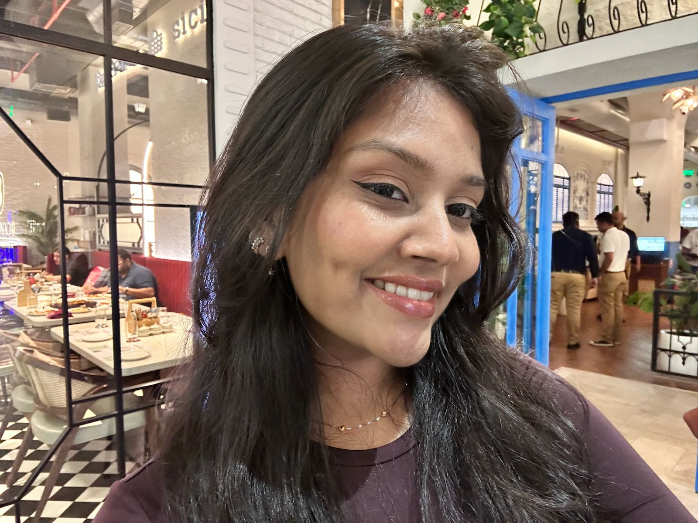

Hello, I'm a 23-year-old designer, professional daydreamer and an enthusiastic collector of hobbies. Currently navigating life in Dublin, one coffee, creative idea and questionable weather forecast at a time. I'm fascinated by beautiful typography, interesting interfaces, pretty packaging, good films and songs that make life feel like a movie. I'm fascinated by films that make me cry and songs that make me feel like I'm living in a movie. Outside my design world, you'll probably find me painting, cooking something delicious, swimming, exploring a new place, watching a movie or planning an imaginary fairytale version of my life. I don't have life figured out (does anyone?). But I'm here to experiment, make mistakes, learn, create, collect memories and hopefully become someone my younger self would think is pretty cool. Anyway, that's a little bit about me. There's a lot more where that came from.
